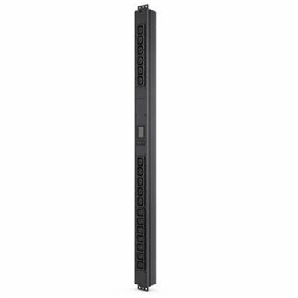

Rack Power Density: Designing and Provisioning It
Density is three different numbers that all get called one thing. Confusing them is how a room ends up with power it cannot deliver to the racks that need it, and circuits sized for a load nothing ever draws.

Key takeaways
- Average density is total IT load divided by rack count. Nothing is designed to it, because the load is never spread evenly.
- Nameplate is the sum of power supply ratings and typically runs well above actual draw. Provisioning to nameplate strands capacity.
- A 10 kW rack draws about 28 A at 208 V three-phase, needing a 40 A circuit at 125 percent. The same rack at 415 V needs half that.
- Dual-corded equipment means each of the A and B feeds carries the full load when the other is out, so both are sized for all of it.
On this page · 6 sections
Three numbers, one word
Average density is arithmetic: total IT load divided by the number of racks. A 1.2 MW hall across 150 racks averages 8 kW. It is a useful planning figure and nothing is ever designed to it.
Design density is what a given rack position is provisioned to support. It varies across the floor deliberately, because the load does. Put ten 40 kW AI racks in that same 1.2 MW hall and they consume 400 kW between them, leaving under 6 kW each for the remaining 140 — so the room needs at least two design densities, and the drawing has to say which positions are which.
Nameplate is the sum of what the equipment labels claim. It is the least useful of the three and the most often used, because it is the only one available before anything is installed. A dual-supply server with two 1600 W supplies has a 3200 W nameplate, draws perhaps 700 W at typical utilisation, and will never draw more than 1600 W on either cord because the second is redundant.
Sizing the rack circuit
Once a design density is fixed, the branch circuit follows from it. At 208 V three-phase a rack drawing its full design load needs:
| Design density | 208 V 3-phase | 415 V 3-phase |
|---|---|---|
| 5 kW | 13.9 A → 20 A circuit | 7.0 A → 15 A circuit |
| 10 kW | 27.8 A → 40 A circuit | 13.9 A → 20 A circuit |
| 15 kW | 41.6 A → 60 A circuit | 20.9 A → 30 A circuit |
| 20 kW | 55.5 A → 70 A circuit | 27.8 A → 40 A circuit |
Circuit ratings allow for the 125 percent continuous-load factor, since IT load is continuous by any definition; the kW to amps calculator gives the current and the wire size calculator the conductor. The 415 V column is the reason 415/240 V distribution became standard in large halls: the same density at roughly half the current means less copper, fewer circuits and less transformation loss.
Dual-corded feeds
IT equipment in a concurrently maintainable or fault tolerant facility is dual-corded, drawing from independent A and B feeds. The arithmetic trap is in what each feed has to carry.
In normal operation the load divides between the two, so each cord sees roughly half. But the whole point of the arrangement is that either path can be lost — for planned work or a failure — and when that happens the surviving feed carries the entire rack. Both feeds, both PDUs, both upstream paths and both sets of conductors are therefore sized for the full design density, not half of it.
That is why a dual-path facility provisions roughly twice the distribution capacity of its IT load, and why monitoring a rack at 45 percent on each feed is the normal, healthy reading rather than evidence of waste. The Uptime Institute tiers describe the topology this supports.
Diversity and stranded capacity
Racks do not all peak together, and a diversity factor acknowledges that: the sum of design densities across a hall exceeds what the hall will ever draw at once. Applying diversity upstream — sizing the UPS and the transformer below the sum of the branch circuits — is normal and necessary, because provisioning for simultaneous peaks on every rack would double the plant.
The failure mode in the other direction is stranded capacity: power that has been paid for, is sitting in the plant, and cannot be used. It happens in three recognisable ways.
- Cooling-limited. The electrical system can deliver 15 kW to a position the air handling can only cool to 8. Above roughly 20 to 30 kW per rack this becomes the binding constraint — liquid vs air cooling covers where that line sits and what crosses it.
- Circuit-limited. Capacity exists upstream but the rack has 20 A circuits in it. Adding density means re-pulling branch circuits, often in an occupied hall.
- Provisioned to nameplate. Circuits sized for 3200 W of labelled supplies feeding 700 W of actual draw. The capacity is committed in the records and idle in reality, and this is the most common form by a wide margin.
Common mistakes
- Designing to average density. It describes the room, not any position in it, and a single high-density row invalidates it.
- Provisioning from nameplate. It overstates draw substantially and strands capacity in the capacity-management records rather than in the plant.
- Sizing dual feeds at half load each. Either feed must carry the whole rack, which is the entire purpose of having two.
- Reading 45 percent utilisation on an A feed as waste. In a dual-path design that is the correct number.
- Treating power and cooling density as one figure. They are provisioned by different systems and the lower one governs what the position can actually hold.
Frequently asked questions
What is rack power density?
The IT load a rack draws or is provisioned for, in kilowatts. It appears as three different figures that get used interchangeably: average density, which is total load divided by rack count; design density, which is what a given position is provisioned to support; and nameplate, which is the sum of equipment power supply ratings and usually well above actual draw.
What size circuit does a 10 kW rack need?
At 208 V three-phase a 10 kW rack draws about 27.8 A, and because IT load is continuous the circuit is sized at 125 percent of that, so a 40 A circuit. The same rack on 415 V three-phase draws about 13.9 A and needs a 20 A circuit, which is why higher-voltage distribution is standard in large halls.
Should each of the A and B feeds be sized for half the load?
No. Both are sized for the full design density. Load divides between them in normal operation, but the purpose of two independent feeds is that either can be taken out of service or lost, and the surviving one then carries the entire rack. This is why a dual-path facility provisions roughly twice the distribution capacity of its IT load.
What is stranded capacity?
Power that has been provisioned and paid for but cannot be used. It happens when cooling cannot remove the heat the electrical system could deliver, when the branch circuits in a rack are too small to carry additional load even though upstream capacity exists, or most commonly when circuits were provisioned from equipment nameplate ratings rather than measured draw.
Next steps
The power distribution reference covers the PDUs and busway this runs through, and liquid vs air cooling covers the thermal limit that usually binds before the electrical one.
Run the numbers
- BTU to Tons ConverterThe cooling capacity that density implies.
- kW to Amps CalculatorRack current at 208 V or 415 V, with the 125 percent figure.
- Wire Size CalculatorThe branch-circuit conductor for that current.
- Transformer Sizing CalculatorThe upstream kVA once diversity is applied.
Cite or link to this guide
Free to quote with attribution. Suggested citation: Voltfield Editorial Team, “Rack Power Density: Designing and Provisioning It” Voltfield, updated September 29, 2026. https://voltfield.org/guide-grid-forming-vs-grid-following.html
Get new guides by email
One short email when a new guide or calculator is published, at most once a month. Your address is used for nothing else.